The Shirts
History
Wore.
A curated archive of iconic football jerseys. Each piece is a cultural artifact — a document of the matches, players, and moments that defined the beautiful game.
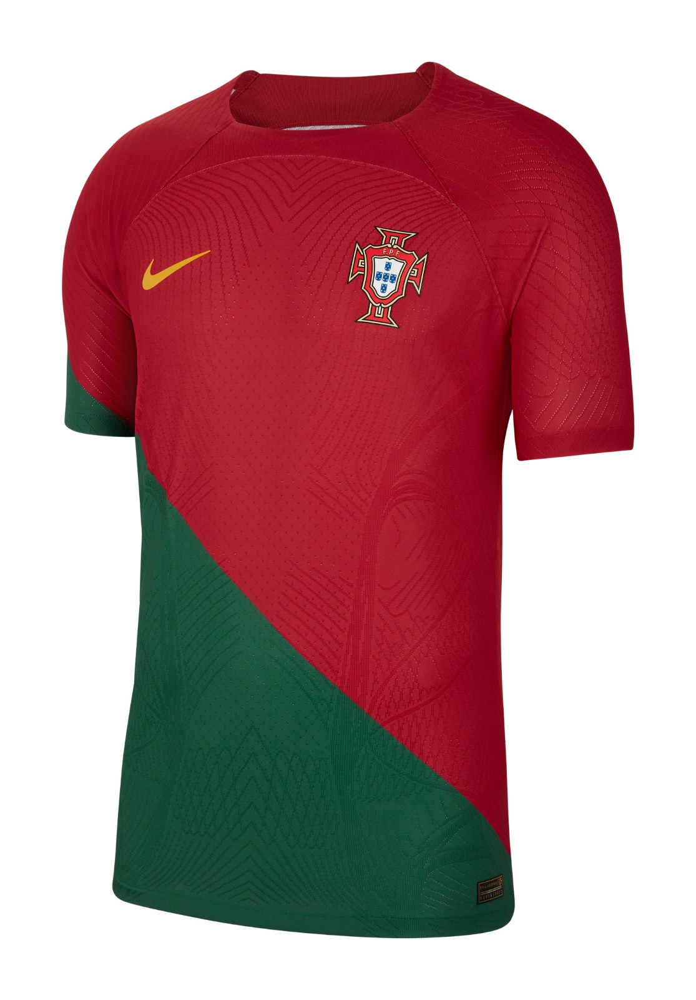
A football jersey is never just fabric. It absorbs sweat, carries numbers, absorbs the weight of history. We collect the ones that changed something — the shirts worn in finals, worn by legends, worn in the exact moment when a sport became culture. Every piece in this archive is documented, authenticated, and given the context it deserves.
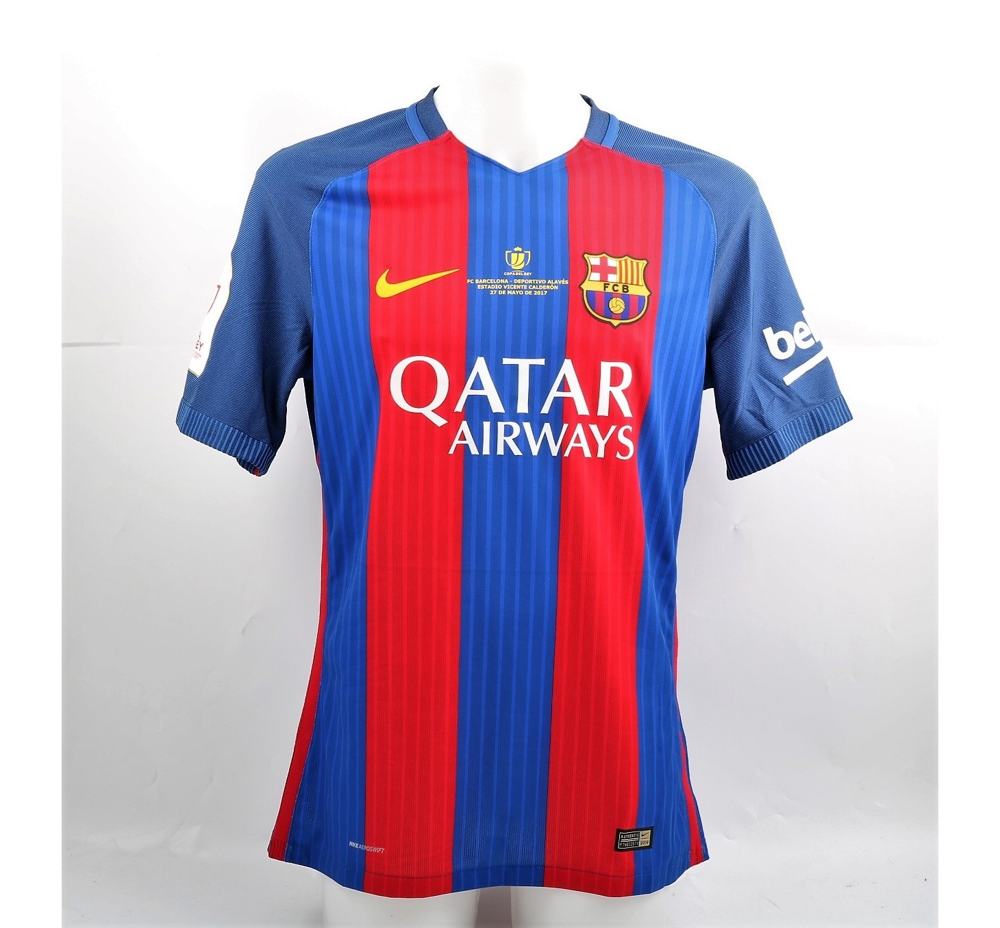
RareLionel Messi
2004 – 2021 · Nike € 620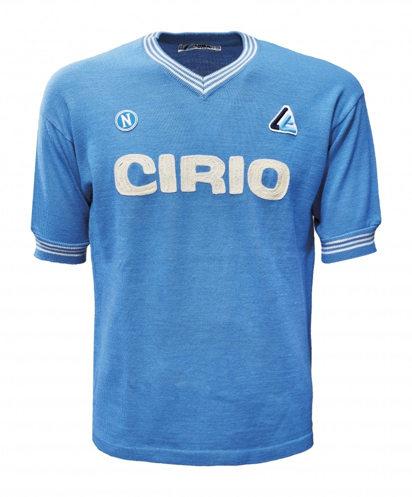
RareDiego Maradona
1984 – 1991 · Umbro € 1,850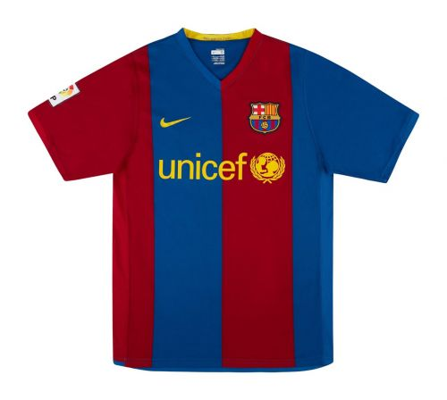
RareRonaldinho
2003 – 2008 · Nike € 900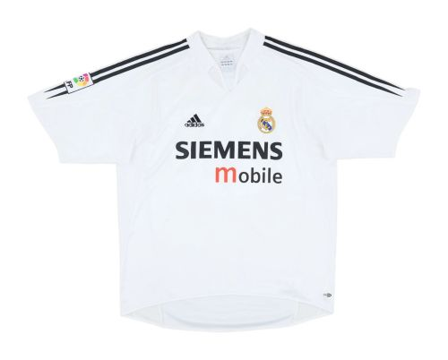
In StockZinedine Zidane
2001 – 2006 · Adidas € 750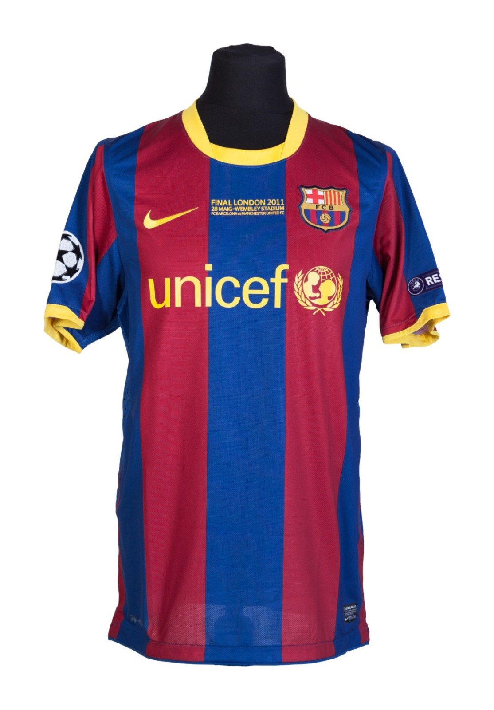
Barcelona Home 2011
Messi's masterclass. A historic treble sealed in Rome against Manchester United.
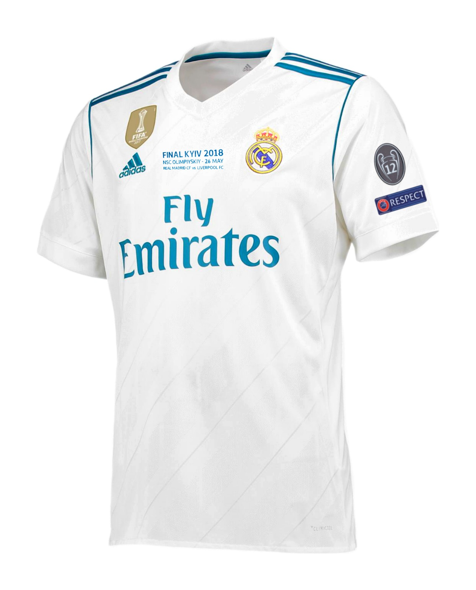
Real Madrid Home 2018
Cristiano's third consecutive crown. The dynasty continues.
The Orchestrator
Pelé. Maradona. Zidane. Messi. The number that carries the weight of genius — no shirt has been worn by more world-changers.
12 pieces in collection →The Executioner
Van Basten. Ronaldo Nazário. Benzema. The number that defined the era of the complete striker — raw, clinical, decisive.
9 pieces in collection →The Wing
Best. Cantona. Figo. Cristiano. A number that belongs to the fearless — the players who made the crowd hold its breath.
11 pieces in collection →The Philosopher
Cruyff wore it once, and it never recovered its neutrality. The #14 is now a philosophy — a system, an idea, a way of possessing space.
4 pieces in collection →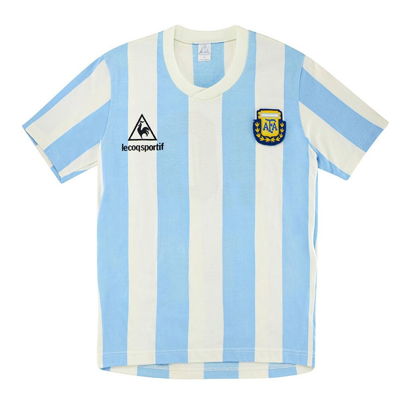
Argentina · Mexico World Cup
The Hand of God. The Goal of the Century. One shirt, two miracles, one match.
€ 2,200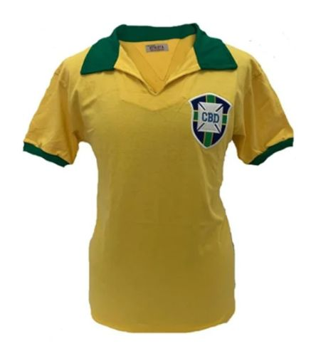
Brazil · First World Cup
Pelé's debut tournament. A teenager changed the sport forever.
€ 1,800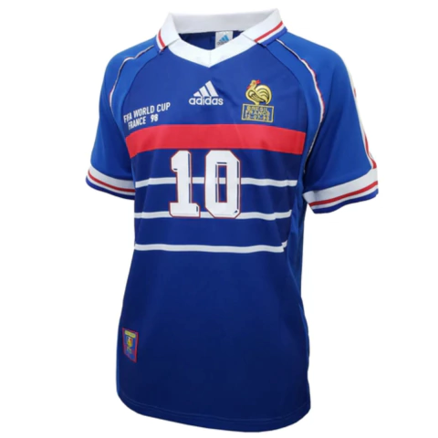
France · Home World Cup
Zidane's header at Stade de France. A nation's first crown.
€ 870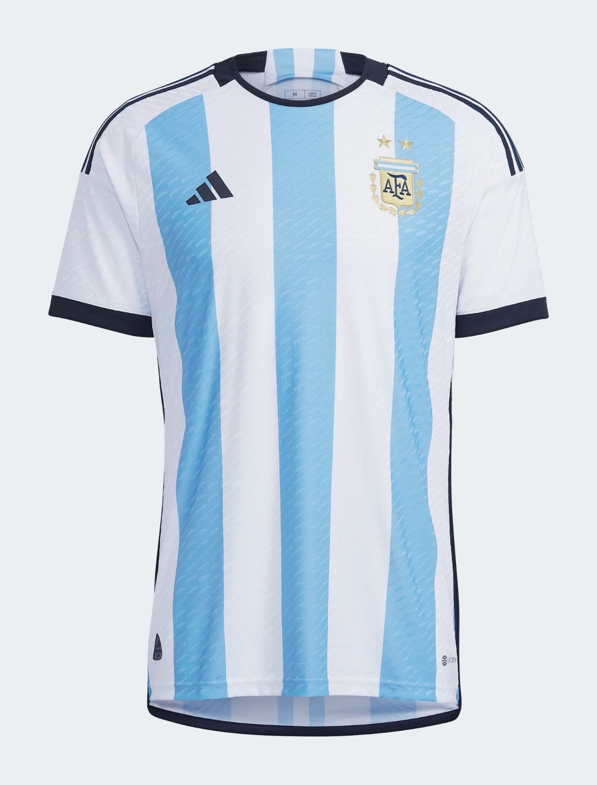
Argentina · Qatar World Cup
Messi's destiny fulfilled. Argentina's third star earned.
€ 640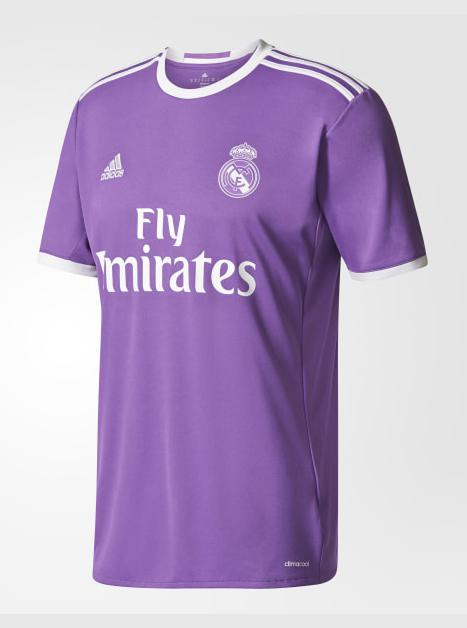
Archive Drop · 001Real Madrid 2016/17 Away
A special edition from the season of two Champions Leagues. Limited release. Adidas' finest away kit construction.
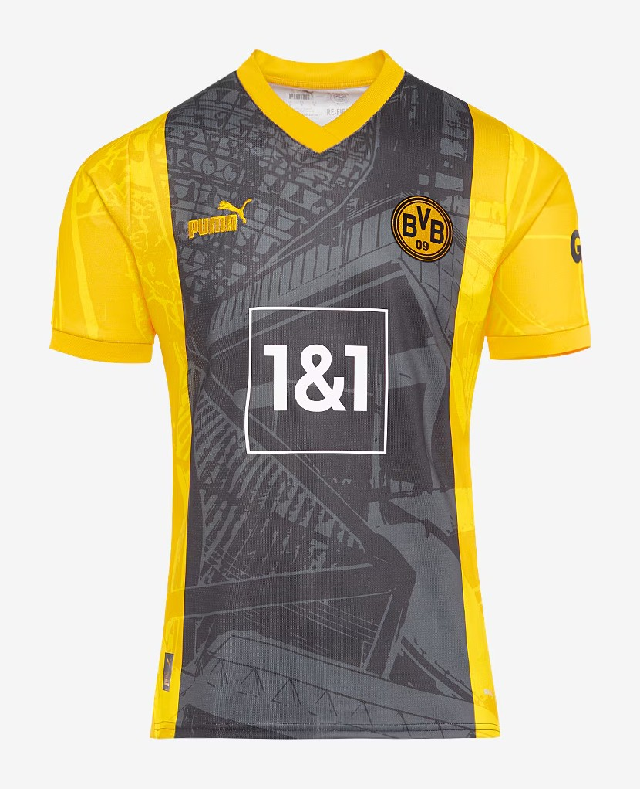
Archive Drop · 002Borussia Dortmund 2023/24 Anniversary
A rare anniversary edition celebrating over 100 years of Borussia Dortmund. Puma's heritage collection.